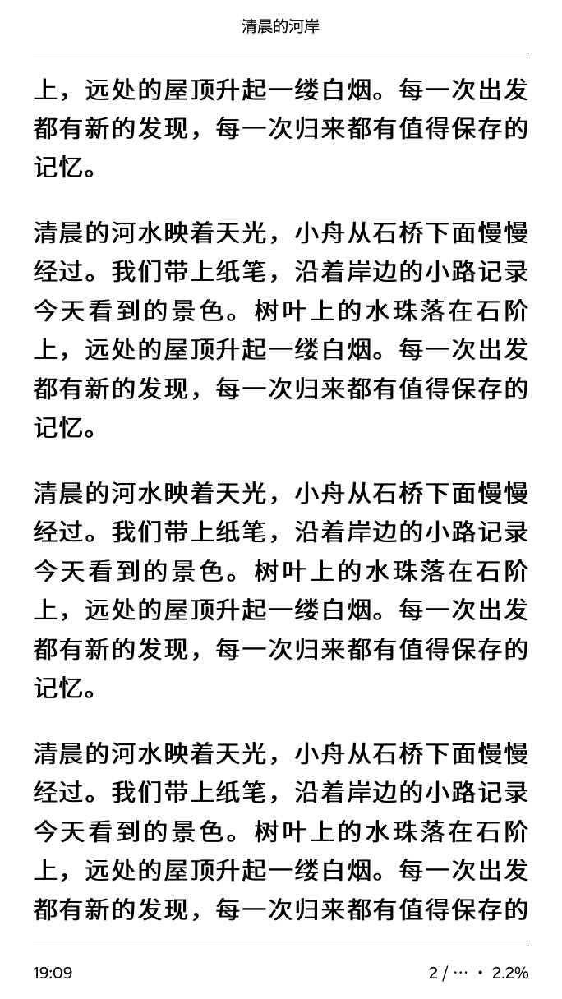
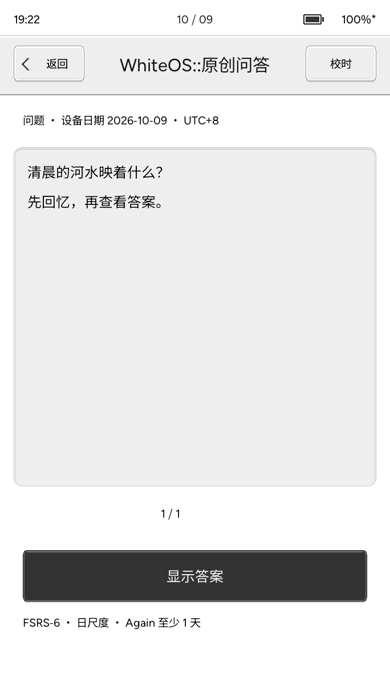

少一点等待，多读几页。
不必等整本书处理完，先从想读的章节开始。流式解码按章处理，配合下一页预绘，把等待留得更短，让阅读接得更顺。
- 按章流式解码，不一次处理整本书
- 页面缓存与下一页预绘，减少重复等待
- 文字与常见插图，目录、书签和进度
章节准备完成后排版；实际等待因书籍与设备而异。
小纸 Pico 阅读固件 阅读，简单一点。
把阅读，还给自己。
LESS NOISE. MORE PAGES.
让手机里的书架来到墨水屏，让随身的文档找到自己的位置。
换一种喜欢的字体，接着读；打开一副牌组，每天记住一点。
01 微信读书 / WEREAD
双向进度同步，接上每一次阅读。
阅读时间同步，也留下墨水屏上的专注。
扫码登录后，在同一个书架里切换本地图书与微信读书。封面、目录和继续阅读，都在熟悉的位置。
按书下载已授权章节，也可以挑选想读的部分。下载完成后离线阅读，读到章末继续下一章，不用来回退出正文。
双向同步手机与小纸的阅读进度，并同步设备新增的阅读时间。两端都往前读了，就由你选择接着哪一处读；也可只取回云端进度。
双向阅读进度与设备→云阅读时间同步已验证成功。同步需手动确认，并非后台自动上传；非官方接入，仅限已授权内容，批注暂不云同步。

固件主机渲染 · 合成数据 · 非实屏录像
02 本地阅读 / YOUR LIBRARY
不必等整本书处理完，先从想读的章节开始。流式解码按章处理，配合下一页预绘，把等待留得更短，让阅读接得更顺。
章节准备完成后排版；实际等待因书籍与设备而异。
让文档保留自己的排版。整页看全貌，放大看细节，旋转或平移到舒服的位置；翻页和跳页都各就各位。
复杂或超出容量的 PDF 可能无法打开；中文字体需由文档内嵌。
Wi-Fi 浏览器传书，或 USB 磁盘复制。
本地阅读不需要始终联网。
阅读菜单 / STAY IN THE STORY
轻触正文中间，或按中间键，打开阅读菜单。
调排版、找章节、留书签，把这一页变成喜欢的样子。

真机截图 · 阅读中的四个菜单
双指缩放 / A NATURAL FIT
双指展开，放大；向内捏合，缩小。
EPUB／TXT 调整字号，PDF 调整页面比例。
移动时预览变化，松手后呈现清晰页面。
字号与版面，各用合适的缩放方式。
双指缩放已发布，阅读大小随手调整。右侧为网页动效示意，实际效果以设备为准。
03 TTF 实时解码 / MAKE IT YOURS
把喜欢的 TTF／OTF 字体放进 TF 卡，在排版菜单里切换。
实时解码需要的字，无需提前转换整套字库。
宋体的温柔、黑体的利落，阅读有自己的语气。
同一段文字，两种阅读气质。
同一阅读位置、字号和边距，换一种字体，让书页换一种表情。喜欢的 TTF／OTF 字体，放进卡里就能选。
真机截图 · DejaVu Serif / Sans
仅更换字体，保留自然换行。
实时解码 · 按需字形 · 随心换字体
字号、字重与抗锯齿，一起调到舒服。
04 翻页动画 / ONE MORE PAGE
一条竖向水波纹，从左到右，或从右到左。
条带扫过，新内容原位覆盖，文字不滑动。
684 × 1216 完整画面，按屏幕比例等比显示。
标准档可选动画，快速档不运行动画；网页示意不代表实屏速度或残影。


真机相邻页截图 · 网页水波纹覆盖演示
05 ANKI 牌库 / A LITTLE EVERY DAY
让碎片时间，变成一点点积累。
导入自己的牌组，在墨水屏上专注回忆。
独立离线学习，不连接 AnkiWeb。原牌组复习历史不迁移，复杂脚本与音视频模板不支持。

真机截图 · 原创问答 · 回忆后再看答案
GOOD TO KNOW
阅读界面来自真实设备。
功能与使用范围，在这里说清楚。
双向阅读进度同步，以及设备→云的新增阅读时间上传，均已验证成功。同步由你手动确认，也可以只取回云端位置。两端位置都有更新时，由你选择从哪里接着读。个人批注暂存本机，不同步到云端；无法准确匹配阅读位置时会停止同步，不猜测位置。
本地阅读支持 EPUB 与 PDF。EPUB 支持文字和有范围限制的 JPEG／PNG 插图，并不复现所有复杂网页排版。PDF 保留固定版式，复杂、超容量或缺少内嵌中文字体的文件可能无法正确打开。Anki 需导出兼容旧版本的 .apkg；导入后从本机新卡开始，不迁移桌面复习历史，不连接 AnkiWeb。
双指缩放已发布。EPUB／TXT 捏合调整字号，松手后从当前阅读位置重新排版；PDF 调整页面比例，以手势中心附近的内容为缩放参考。移动时预览变化，松手后呈现清晰页面；资源不足时可能仅显示松手后的结果。实际响应与显示效果以设备为准。
书架、主页、EPUB、PDF、阅读菜单、字体和 Anki 均为 2026 年 10 月 9 日采集的真机帧缓冲截图，保留完整 684 × 1216 画面，使用原创示例内容。微信读书的三张图仍为固件主机渲染示意。手势与翻页动画由网页演示；截图不代表墨水屏的光学效果或刷新速度，网页设备外框也为示意。